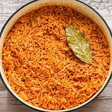

Jollof Rice

Description:
This is a nice Nigerian dish which is made by cooking rice and adding soup. Learn the recipe correct and you
can make this for yourself at uni!
Ingredients:
- White Rice (wash it ashewo)
- Tomato Sauce
- Rodo supa hot fire
- Ice Cream (this shxt finna be hot!)
Steps:
- Wash your rice detty boy.
- Boil it up.
- Add some bay leaves, spices and the tomatoes. (this wasn't on the Ingredients list...WHAT ARE U GONNA DO BOY?)
- Boil until mostly dry.
- Serve and enjoy!